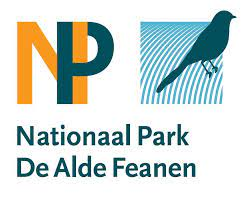

Nationaal park "De Alde Feanen"

index
galerij
info
Hieronder een kleine impressie van het natuurgebied "De Alde Feanen"
Hieronder kun je alvast genieten van aantal vogelgeluiden die je kan horen in het natuurpark